Interface to DFTD3 by S. Grimme¶
Code author: Lori A. Burns
Section author: Lori A. Burns
Module: Samples
Psi4 contains code to interface to the DFTD3 program of S. Grimme, which is freely downloadable from http://www.thch.uni-bonn.de/tc/index.php?section=downloads&subsection=getd3&lang=english).
Installation¶
DFTD3 is available as conda package. If using the Psi4 binary, the
dftd3 executable has already been installed alongside. If using
Psi4 built from source, and anaconda or miniconda has already
been installed (instructions at Quick Installation), the dftd3
executable can be obtained through conda install dftd3.
To be used by Psi4, the program binary (dftd3) must be
found in your PSIPATH or PATH (in that order). If
Psi4 is unable to execute the binary, an error will be reported.
To preferentially use a particular dftd3 compilation, simply adjust its
position in the path environment variables. To remove the dftd3 that
conda installs alongside Psi4, conda remove dftd3.
Alternatively, to build DFTD3 yourself, follow the instructions provided with the source (essentially, unpack the source, edit the Makefile to select a Fortran compiler, and run make). From version 3.1.0 onwards, DFTD3 can be used as-is; for earlier versions, patches are available: psi4/share/scripts/patch_grimme_dftd3.3.0.2.
>>> cd dftd3
>>> ls
dftd3.tar
patch_grimme_dftd3.3.0.2
>>> tar -xvf dftd3.tar
copyc6.f
dftd3.f
Makefile
man.pdf
pars.f
param
>>> patch < patch_grimme_dftd3.3.0.2
patching file dftd3.f
>>> make
making dftd3.o from dftd3.f
ifort -O -c dftd3.f -o dftd3.o
making copyc6.o from copyc6.f
ifort -O -c copyc6.f -o copyc6.o
ifort dftd3.o copyc6.o -o ./dftd3
>>> ls
Makefile copyc6.o dftd3.f dftd3.tar param patch_grimme_dftd3.3.0.2
copyc6.f dftd3 dftd3.o man.pdf pars.f
Theory¶
The local or semilocal character of conventional density functionals necessarily leads to neglect of the long-range correlation interactions which capture attractive van der Waals forces. Initially proposed by Yang [Wu:2002:515] and assiduously developed by Grimme, [Grimme:2004:1463] [Grimme:2006:1787] [Grimme:2010:154104] the DFT+Dispersion method appends to the base functional a scaled, damped, and fitted leading term to the well-known dispersion energy series, 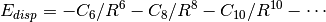. The DFT-D2 [Grimme:2006:1787] variant takes the explicit form below. Here, dispersion coefficients, 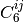, obtained from the geometric mean of tabulated elemental values, are summed over interatomic distances, 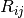, modulated by a damping function, 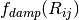, that gradually activates the dispersion correction (at a rate characterized by 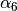) over a distance characterized by the sum of the two atomic vdW radii, 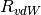, while an overall scaling term, 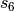, is optimized to be unique to each 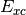 functional. ( is sometimes allowed to vary as well.)
(1)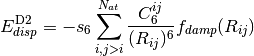
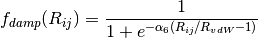
Grimme recently presented a refined method, DFT-D3, [Grimme:2010:154104]
which incorporates an additional 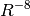 term in the dispersion
series and adjusts the  combination formula and damping
function. The individual atomic 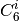 are interpolated from
several reference values based upon coordination numbers extracted from
the molecular structure, rather than assigned solely by atomic identity as
in DFT-D2, and thereby incorporate some awareness of the chemical
environment into an otherwise largely heuristic correction. The -D3
dispersion has the following form, where 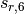 and 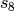
are the customary nonunity parameters fitted for individual functionals.
combination formula and damping
function. The individual atomic 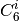 are interpolated from
several reference values based upon coordination numbers extracted from
the molecular structure, rather than assigned solely by atomic identity as
in DFT-D2, and thereby incorporate some awareness of the chemical
environment into an otherwise largely heuristic correction. The -D3
dispersion has the following form, where 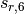 and 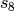
are the customary nonunity parameters fitted for individual functionals.
(2)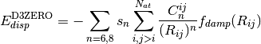
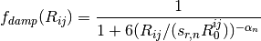
A modified damping scheme for DFT-D3 using the rational damping form of
Becke and Johnson was introduced in [Grimme:2011:1456]. The parameters
fit for individual functionals are now , ,
 , and .
, and .
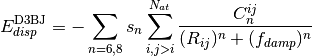

All parameters characterizing the dispersion correction are taken from http://toc.uni-muenster.de/DFTD3/ or else from the literature.
Running DFTD3¶
A number of a posteriori dispersion corrections are available in
Psi4. While most are computed within Psi4‘s codebase (-D1, -D2,
-CHG, -DAS2009, -DAS2010), the -D3 correction and its variants are
available only through the DFTD3 program. Once installed, the
dftd3/Psi4 interface is transparent, and all corrections are
interfaced exactly alike.
Dispersion corrections are built into DFT functionals, so appending an a
posteriori correction to a computation is as simple as
energy('b2plyp-d') vs. energy('b2plyp'). For example, the
following input file computes (with much redundant work) for water a
B3LYP, a B3LYP-D2, and a B3LYP-D3 (zero-damping) energy.
molecule h2o {
O
H 1 1.0
H 1 1.0 2 104.5
}
set {
basis cc-pVDZ
}
energy('b3lyp')
energy('b3lyp-d')
energy('b3lyp-d3')
Consult the table -D Functionals to see for each
functional what corrections are available and what default parameters
define them. The dispersion correction is available after a calculation in
the PSI variable DISPERSION CORRECTION ENERGY.
By default, the output from the dftd3
program is suppressed; to see it in the output file, set print > 2.
| Extension [1] | Variant and Computing Program | DFT_DISPERSION_PARAMETERS |
|---|---|---|
| -D | alias to -D2P4 | |
| -D1 | -D1 [2] within Psi4 | |
| -D2 | alias to -D2P4 | |
| -D2P4 | -D2 [3] within Psi4 | [] |
| -D2GR | -D2 [3] through dftd3 |
[, ] |
| -D3 | alias to -D3ZERO | |
| -D3ZERO | -D3 [4] w/ original zero-damping through dftd3 |
[, , , ] |
| -D3BJ | -D3 [5] w/ newer Becke-Johnson rational damping through dftd3 |
[, , , ] |
| -D3M | alias to -D3MZERO | |
| -D3MZERO | -D3 [6] w/ reparameterized and more flexible original zero-damping through dftd3 |
[, , ,  ] ] |
| -D3MBJ | -D3 [6] w/ reparameterized newer Becke-Johnson rational damping through dftd3 |
[, , , ] |
Footnotes
| [1] | Note that there are functionals with these extensions (e.g., wB97X-D) that, not being Grimme corrections, have nothing to do with this table. |
| [2] | [Grimme:2004:1463] |
| [3] | (1, 2) [Grimme:2006:1787] |
| [4] | [Grimme:2010:154104] |
| [5] | [Grimme:2011:1456] |
| [6] | (1, 2) [Smith:2016:2197] |
A few practical examples:
DFT-D2 single point with default parameters (
dftd3not called)energy('bp86-d')
DFT-D3BJ optimization with default parameters
optimize('pbe-d3bj')
DFT-D2 optimization with custom s6 parameter
set dft_dispersion_parameters [1.20] optimize('b3lyp-d2')DFT-D3ZERO single point (b3lyp) with custom s8 parameter (reset all four values)
set dft_dispersion_parameters [1.0, 2.0, 1.261, 14.0] energy('b3lyp-d3')
If only dispersion corrections (rather than total energies) are of
interest, the dftd3 program can be run independently of the scf
through the python function run_dftd3(). (This function
is the same Psi4/dftd3 interface that is called during an scf job.)
This route is much faster than running a DFT-D energy.
Some set-up:
molecule nene { Ne Ne 1 2.0 } nene.update_geometry()The same four dispersion corrections/gradients as the section above:
>>> print nene.run_dftd3('bp86', 'd', dertype=0) -7.735e-05 >>> E, G = nene.run_dftd3('pbe', 'd3bj') >>> print G [[0.0, 0.0, -1.1809087569358e-05], [0.0, 0.0, 1.1809087569358e-05]] >>> E, G = nene.run_dftd3('b3lyp', 'd2', {'s6': 1.20}) >>> print E -8.84e-05 >>> E, G = nene.run_dftd3(dashlvl='d3', dashparam={'s8': 2.0, 'alpha6': 14.0, 'sr6': 1.261, 's6': 1.0}) >>> print E -0.00024762
-
run_dftd3(self, func=None, dashlvl=None, dashparam=None, dertype=None, verbose=False)[source]¶ Function to call Grimme’s dftd3 program (http://toc.uni-muenster.de/DFTD3/) to compute the -D correction of level dashlvl using parameters for the functional func. The dictionary dashparam can be used to supply a full set of dispersion parameters in the absense of func or to supply individual overrides in the presence of func. Returns energy if dertype is 0, gradient if dertype is 1, else tuple of energy and gradient if dertype unspecified. The dftd3 executable must be independently compiled and found in
PATHorPSIPATH. self may be either a qcdb.Molecule (sensibly) or a psi4.Molecule (works b/c psi4.Molecule has been extended by this method py-side and only public interface fns used) or a string that can be instantiated into a qcdb.Molecule.